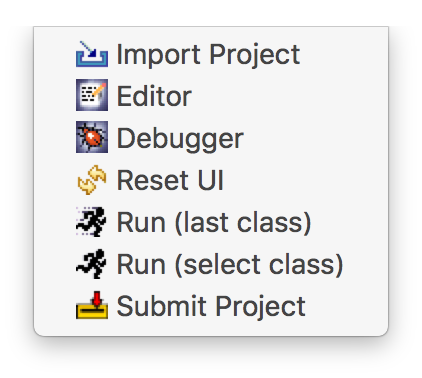
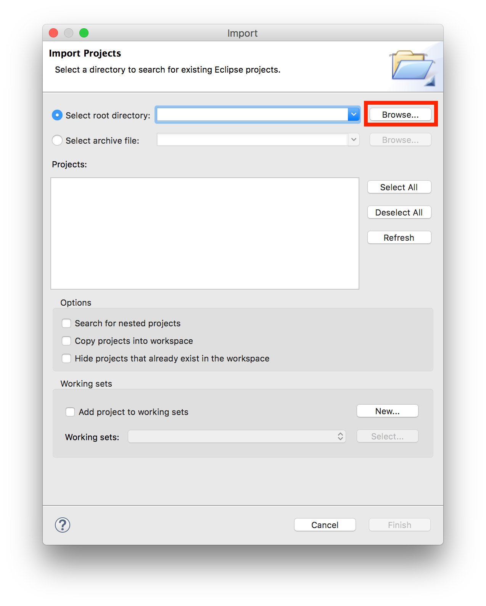
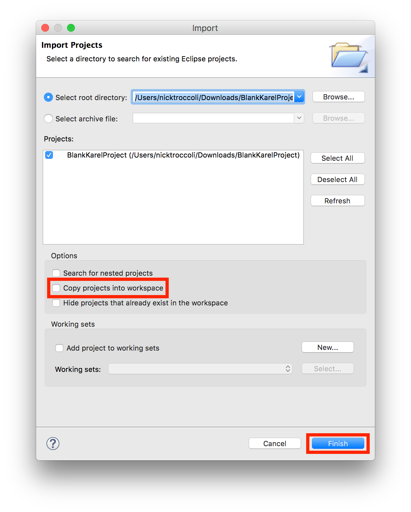
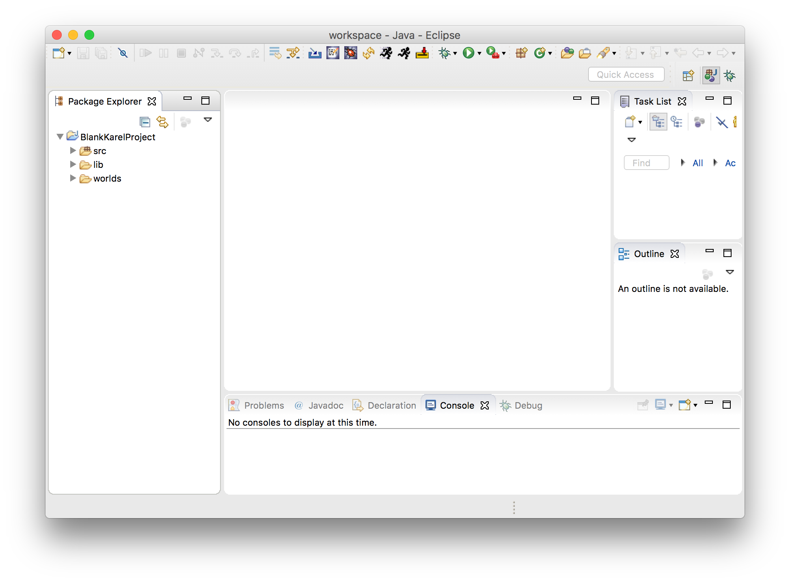
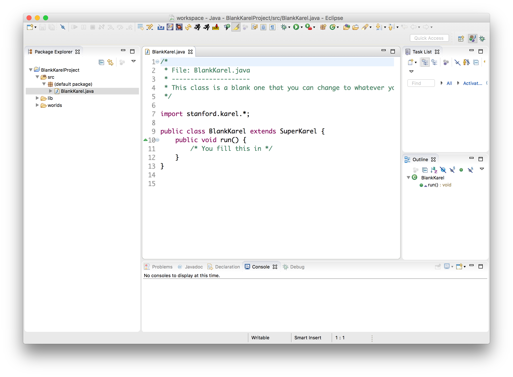
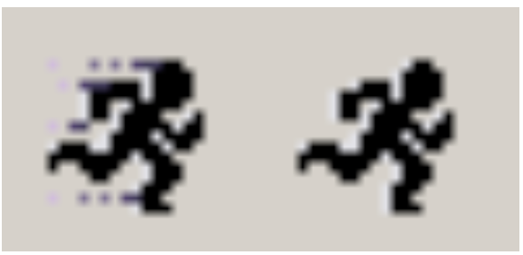
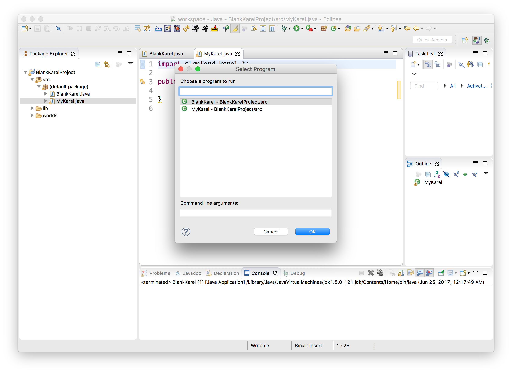
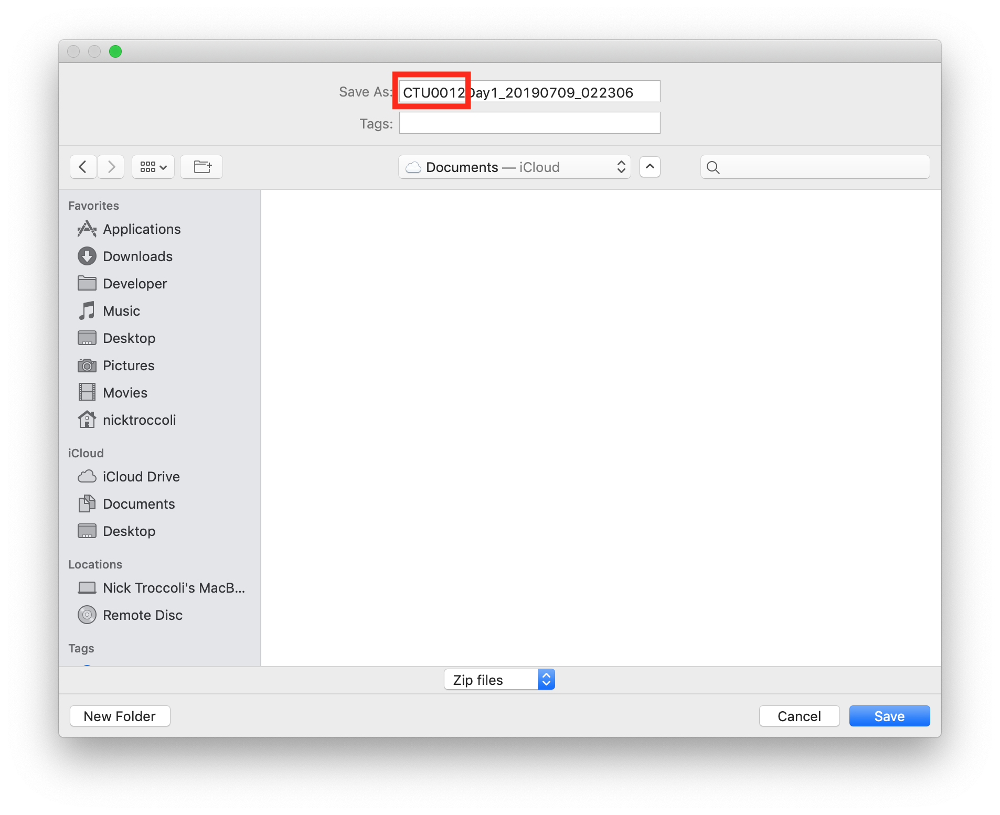
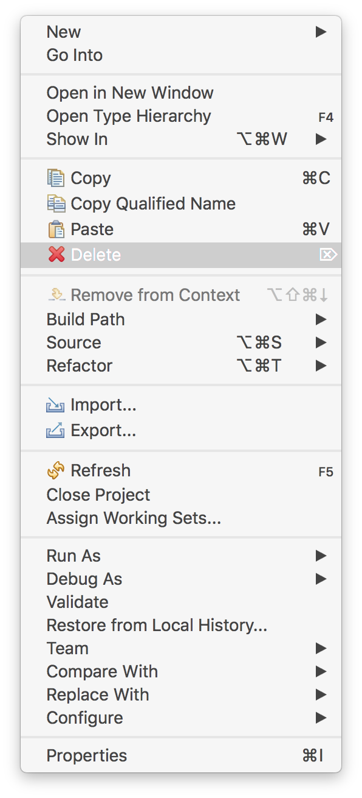

Working On Projects
For each day, we will provide a starter project containing programs we will work on that day - for example, "Day1.zip", on the main page of the course website. Therefore, at the start of each day, your first task will be to download the starter project from the CSBridge website and then import it into Eclipse. Once you do that, you can work on your programs.
Contents
Importing Projects | Running Programs | Submitting at the end of each day | I need help!Importing Projects
- The starter project will download as a zip file (e.g. Day1.zip). You must convert the ZIP file to a folder to open in Eclipse. To do this, right-click on the zip file and select "Extract All". Then, in the window that pops up, click "Extract". Now you will have a folder appear, such as "Day1", in the same place on your computer as the ZIP file. Next we will import this folder into Eclipse.
-
Launch Eclipse, and from the Stanford Menu at the top select "Import Project" (or look for an icon like the one below in the Eclipse toolbar). Note: if you do not see the Stanford Menu in Eclipse, see the "I need help" section at the bottom of the page.
 -
Select the project you would like to import by clicking the topmost Browse... button and navigating to the folder we created from the earlier steps. Then click OK.
 -
Now, make sure that the check box labeled "Copy projects into workspace" is unchecked, and then click the Finish button to import the project.

-
You should now see the project in the left "Package Explorer" sidebar, like in the image below. Double-click on the project folder to expand its contents.

The src folder contains the .java code files you will be working on. Karel projects have a worlds folder containing the Karel worlds for the project. Double-click on src, and within that double-click on the default package, to show the code files for the day. Then double-click on any code file to open it in the main editor window.

Now, see the next section for how to run a program.
Running Programs
-
A project can contain multiple programs. To run a program in your project, look for the "running person" icons in the top toolbar.
 -
The "fast" running person immediately runs the most recently-run program (convenient when focusing on a single program), and the "slow" running person displays a list of all programs imported into Eclipse, like the following:

Select the program you would like to run, and it will launch! - If you make changes to your code, you must re-run your program in order for the changes to take effect.
Submitting Your Work
At the end of each day, before you leave you should submit your work. This allows us to see all of the awesome programs you have been working on. To submit a project in Eclipse, we will first export the entire project from Eclipse as a single ZIP file. Then we will upload it to the course staff. Follow these steps:
- Save your work! Always remember to save all your work in Eclipse before submitting so you submit your most recent changes.
-
From the Stanford Menu dropdown at the top, select Submit Project (or look for an icon like the one below in the Eclipse toolbar).
- Select the project you would like to submit, and click "OK".
-
On the next screen, it will ask you where you would like to save the ZIP file to submit. It suggests a name to use to save the file. Keep this name, but add "CTU" followed by the student ID on your name badge to the beginning of the filename in the text field, like in the picture below. Your student ID is on the back of your name badge - it is the number in the username after "intern2019". (for example, if your username is "intern2019204", your student ID is 204). Also save it to a location that is easy to find, such as the Desktop, and then click "Save" to save it.
 - The submit tool may automatically open a webpage asking for a Stanford login - you can ignore this webpage and close it.
- Find this file on your computer and upload it to this webpage.
I Need Help!
Here are answers to some common issues with Eclipse. Feel free to also ask your Section Leader if you have any questions.
- Q: Help! I don't see the "running person", submit, import, etc. icons or the "Stanford Menu" in my Eclipse.
- A: This means the Stanford Plugin is not installed; please ask a Section Leader to help you follow the instructions listed here for installing the Stanford Plugin.
- Q: My Eclipse window doesn't look like the ones in the screenshots or in lecture. I'm missing some of the panels (e.g. the sidebar showing all my projects). Help!
-
A: Click the "Reset" button in the Stanford Menu to reset to the default view.
You may also be in Debugger mode instead of Editor mode; use the Stanford Menu to go back to Editor mode.
-
Q: Help! Eclipse is not letting me import a project. It gives me a warning at the top that "Some projects cannot be imported".

-
A: This is because a project with that name is already imported into Eclipse. If you would like to import this project, you must first delete the existing project by right-clicking the project in the sidebar and selecting "Delete". You can then choose whether to delete the project from your computer as well, or just delete the project from Eclipse.

- Q: How do I install Eclipse on another computer?
- A: Follow the instructions listed here for installing the version of Eclipse used here, including the Stanford Plugin.